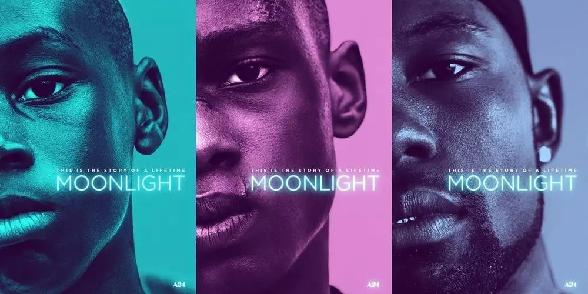
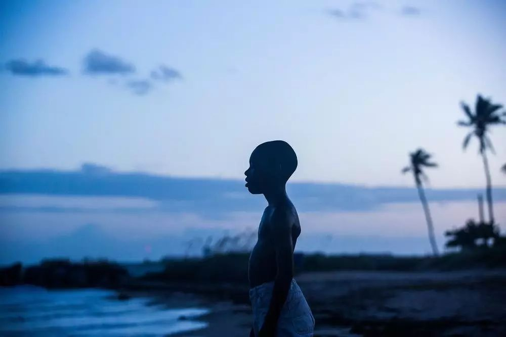
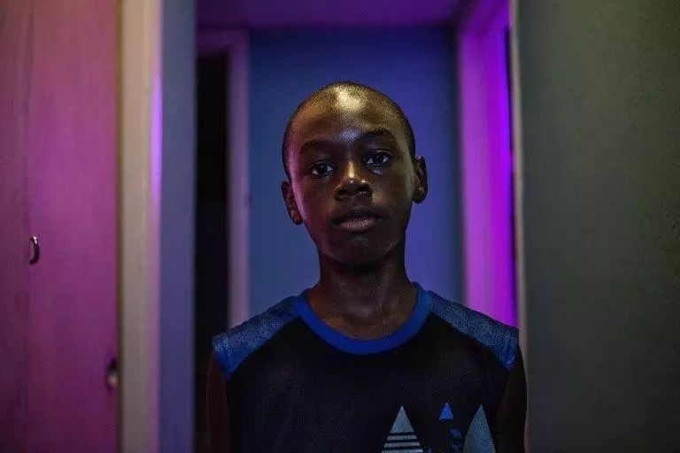
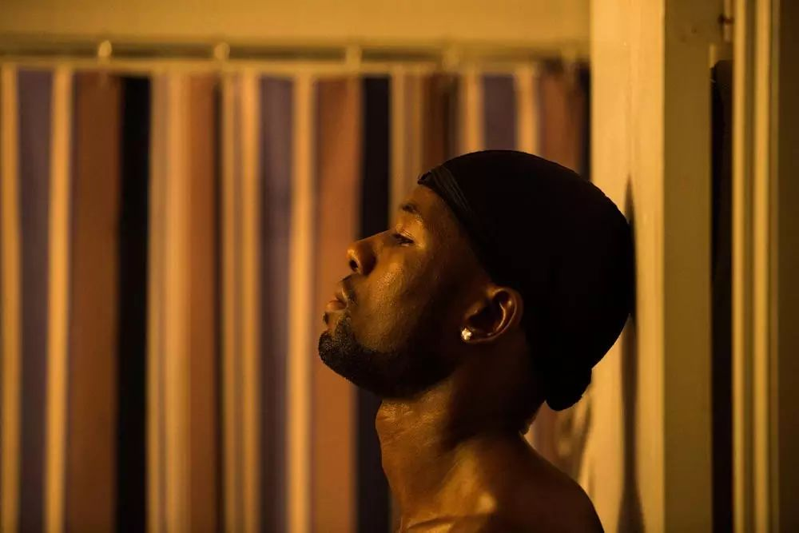

棱镜 | 关于月光男孩（剧透慎入！）


前段时间，奥斯卡颁奖典礼上主持人乌龙颁错奖的事引起人们激烈的讨论，本届奥斯卡最佳影片《月光男孩》也受到了极大的关注。让我们来看看肯在观看这部影片之后有什么看法吧。

虽然早就下载好了，但如果不是获得奥斯卡的消息，这部电影可能依然躺在硬盘里直至被遗忘。一小时五十分钟，没有什么跌宕起伏的剧情，看完以后感觉有些冷。跳跃的叙事展现的似乎仅是喀戎人生的冰山一角，而这些碎片的信息也足以让人感到水面之下可怖的存在。

虽说不幸的人各有各的不幸，但不幸的经历总是有着惊人的相似。小孩子们犹如本能般的知道在打闹时找准欺凌的对象。说话语气太过柔软，对于玩闹时推搡的排斥，甚至走路的姿势都可能招致嘲弄和暴打。而这又恰恰是开始学习是非对错的年纪。伴随着逃跑时的恐慌和被打时的疼痛，基佬不是什么好事的记忆就深深地刻入了直觉当中。直至影片结束，喀戎也未曾见得与自己这一身份和解。这份恐惧就萦绕在身边，打开小软件随时可以见到“不娘”的要求与声明，唯恐与“娘”扯上关系就暴露了自己日常精心的伪装。明明是最近距离数值已经为负，出去逛街依然默契的保持安全距离。
人们当然可以有自己的偏好——娘或不娘，或许也有人确实不喜欢黏腻的情侣关系，但我们无从知道这些偏好是什么时候被谁以什么方式决定的，只能在它们毁了某段关系时，眼睁睁地在回忆中目睹我们是如何被塑造的。对于喀戎而言，海滩上月光下蓝色的男孩在给自己手淫后，他说的第一句话却是抱歉。愧疚和不安，也许压不住告别时不住回望的心情，直到对方再次出现的面前，身后是一群叫嚣的恶霸让他狠狠地揍这个基佬。多么的无奈。

交叉性作为学术概念常常在阅读中出现，而电影中的体现方让人感到它的沉重。如果这只是一次校园霸凌事件，受欺负的学生或许会配合校方起诉霸凌者，律师与司法的又一次励志的胜利。但是头破血流的喀戎只能在问询时哭喊着你们不懂。或许他想保护凯文，那个唯一算得上是朋友，自己有着暗暗情愫的同龄男生；又或许他会觉得这是对于自己的惩罚，居然将不该有的想法在好友身上付诸实践。我们只知道他进行了自己的复仇，然后过上了禁欲的毒贩生活。如果他的生活里有一点点的转机——母亲在面对自己儿子的性向时能够多一点点的认可，视若父亲的人不是以贩毒为生，被霸凌时起诉对方不是唯一的选项——或许他的人生轨迹能有些许的不同。但贫穷，种族，社群，性向多重交织的歧视编制成网令他难以脱身。

第三章时见到的喀戎已和少年时瘦长的竹竿判若两人——健壮的身材，夸张的饰品，以及调教新人时老毒枭的气场。许多影评说这是一部男孩的成长史。成长个屁！成长这词太过阳光，只能是用在那些中产阶级的励志青春片上。已是中年人的喀戎在发现电话那端是凯文时忽然变得羞涩不安的声线，二话不说驱车南下只为见他一面，坦言自己再未与人身体接触之后却只是将头靠在他的肩上沉默不语。凯文的钱包里小凯文笑得很灿烂，但仔细想想他是又一个单亲家庭成长的黑人小孩，而有一天他可能也会遇到一个贩毒的大叔告诉他黑人男孩在月光下看起来是蓝色的故事。哪来的成长，不过是不幸的人互相扶持着活了下来罢了。